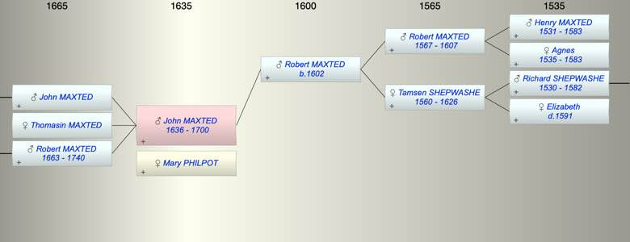

| [Index] |
| John MAXTED (1636 - 1700) |
|  |
| b. 1636 at St Lawrence |
| +. Mary PHILPOT |
| d. 1700 aged 64 |
| Parents: |
| Robert MAXTED (1602 - ) |
| Siblings (1): |
| Ann MAXTED (1633 - 1685) |
| Children (3): |
| John MAXTED |
| Thomasin MAXTED |
| Robert MAXTED (1663 - 1740) |
| Grandchildren (3): |
| Ann Moses MAXTED (1757 - ), Robert MAXTED (1703 - 1747), Jane MAXTED (1711 - 1714) |
| Events in John MAXTED (1636 - 1700)'s life | |||||
| Date | Age | Event | Place | Notes | Src |
| 1636 | John MAXTED was born | St Lawrence | Note 1 | ||
| 1663 | 27 | Birth of son Robert MAXTED | Note 2 | ||
| 1700 | 64 | John MAXTED died | Note 3 | ||
| Death of father Robert MAXTED | Note 4 | ||||
| Created on a Mac™ using iFamily for Mac™ on 8 Oct 2023 |